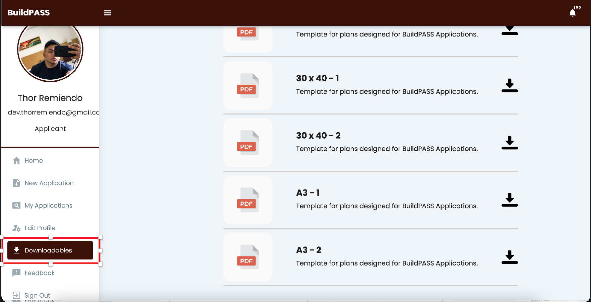
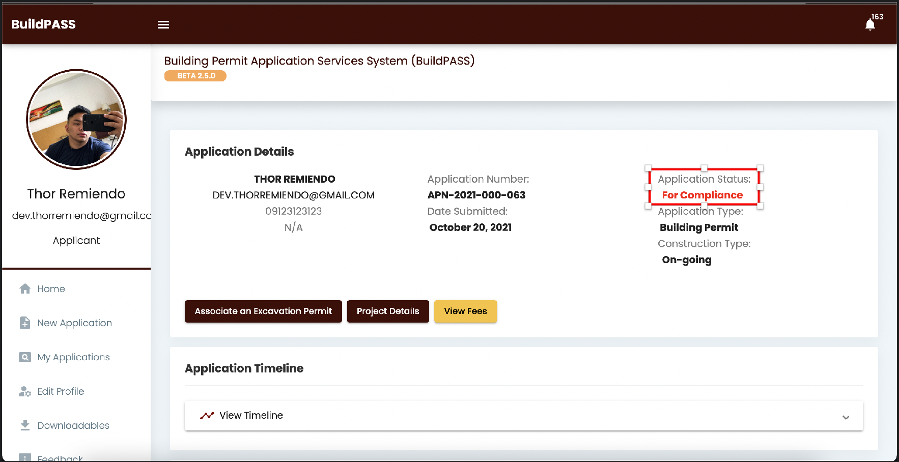
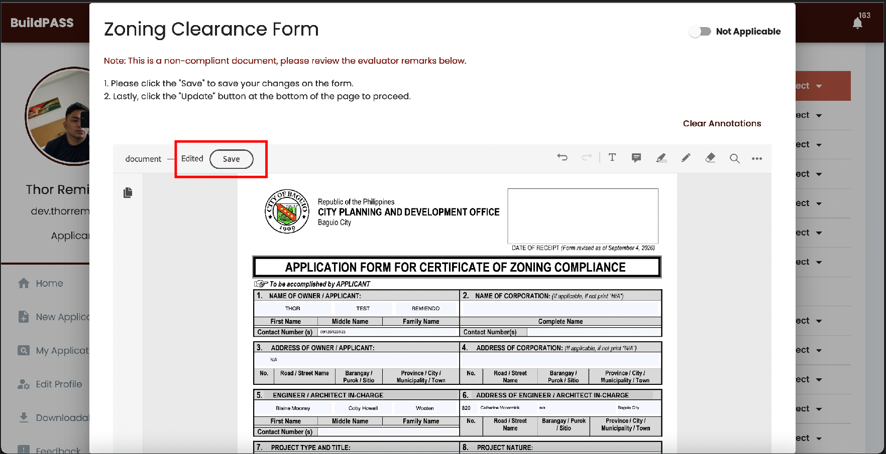

1. Please be reminded that all documents and/or plans to be submitted should
not contain the signatures of the design professionals. Signatures of
professionals will be inserted on approved documents/plans that has
watermark generated by the system
2. Please follow the template of plans located at the 'Downloadables' tab on
the left side of the screen.

3. In case some revisions are noted on your application, you can only change
the files uploaded if the status of your application is "For Compliance"

4. Any changes made on the electronic forms being filled out in this system
will not be saved unless you press the save button located on the upper left
side of the form

5. Always be guided by the timeline of the system to know the current status
of your application